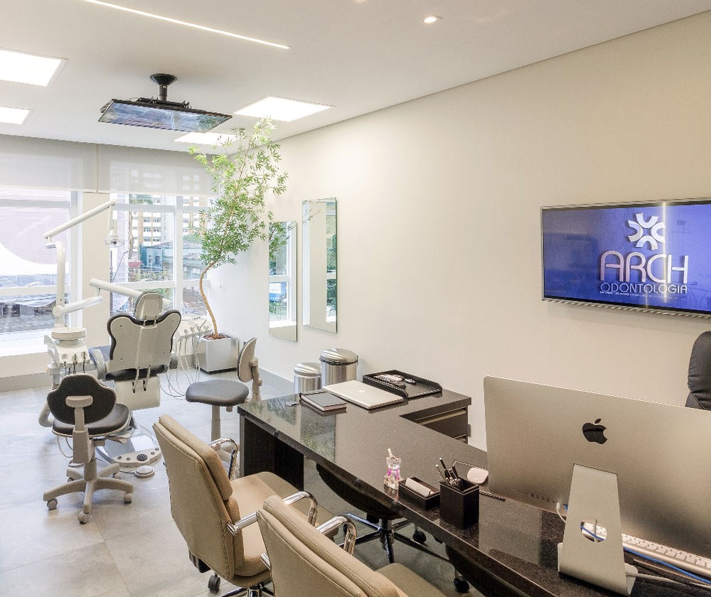
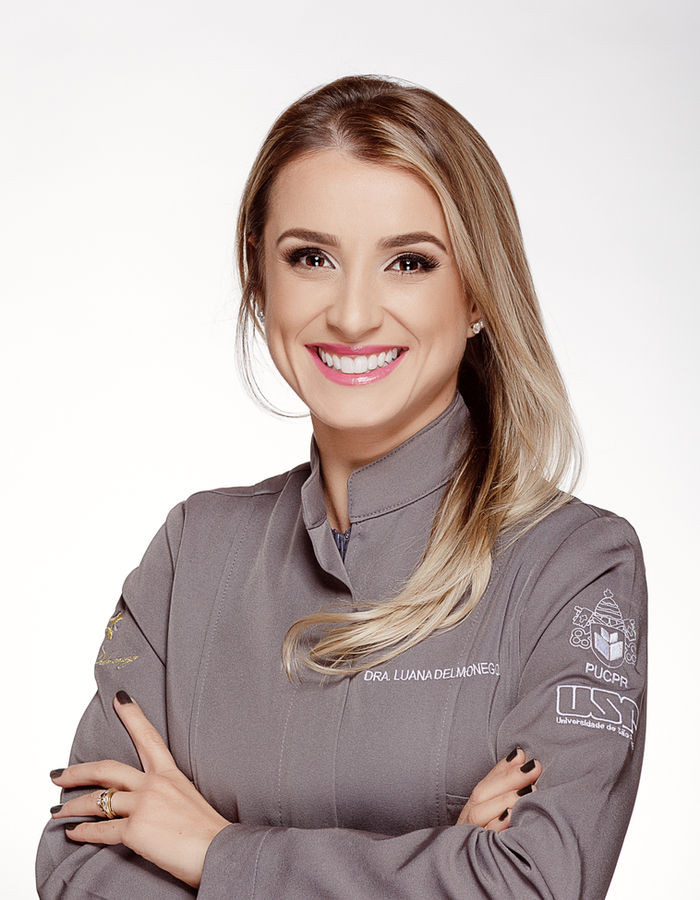
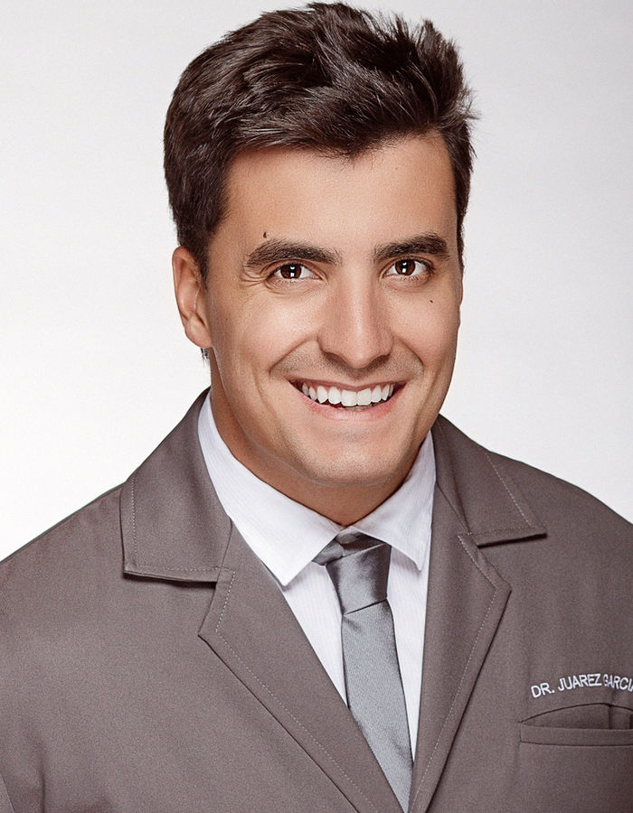
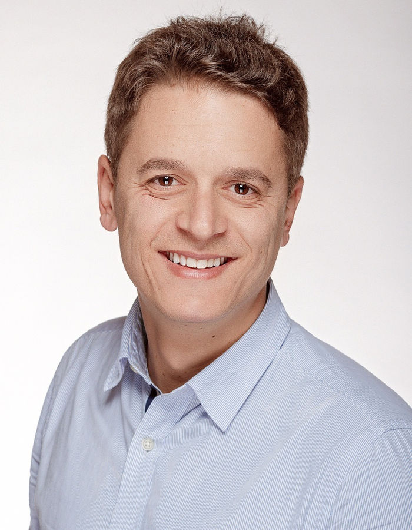
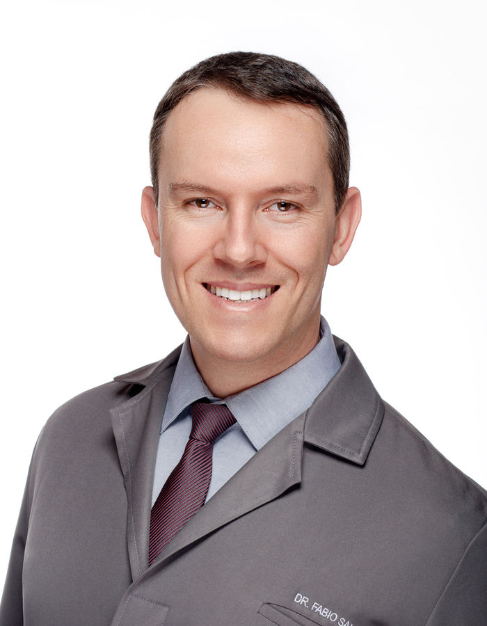

Odontologia estética
Planejamento de sorriso, lentes de contato dental e restaurações estéticas com abordagem conservadora.
Agendar avaliação →Odontologia oral e facial em Curitiba
Planejamento individualizado, equipe multidisciplinar e tecnologia para cuidar da sua saúde bucal com clareza e atenção em cada etapa.
Arch Odontologia
A Arch reúne especialidades odontológicas em um só espaço para construir planos de tratamento coerentes com as necessidades de cada paciente.
Da prevenção à reabilitação oral, o compromisso é acompanhar cada etapa com informação clara e soluções integradas.
Ver localização e contato
Tratamentos
A indicação depende de avaliação clínica. Conheça algumas das áreas atendidas pela equipe.
Planejamento de sorriso, lentes de contato dental e restaurações estéticas com abordagem conservadora.
Agendar avaliação →Alinhadores transparentes e tratamentos ortodônticos para diferentes necessidades.
Agendar avaliação →Planejamento cirúrgico e reabilitador conforme a avaliação e as necessidades de cada paciente.
Agendar avaliação →Planejamento de próteses e reabilitação conforme a avaliação e as necessidades de cada paciente.
Agendar avaliação →Procedimentos planejados com atenção ao equilíbrio, à naturalidade e à individualidade.
Agendar avaliação →Avaliação, higiene, acompanhamento e cuidados essenciais para manter a saúde bucal.
Agendar avaliação →Nossa forma de cuidar
Cada plano começa com diagnóstico e conversa. O tratamento é construído com você, sem promessas de resultado.
Escuta atenta, conforto e espaço para entender suas prioridades.
Avaliação e plano individualizado, com possibilidades explicadas com clareza.
Execução responsável do plano definido, com integração entre especialidades.
Acompanhamento periódico dos procedimentos e da sua saúde bucal.
Equipe Arch
Profissionais apresentados no site oficial da Arch. Registros exibidos quando confirmados em fonte pública correspondente.

Odontologia estética
CRO-PR 20.055
Endodontia
Cirurgião-dentista
Implantodontia
CRO-PR 22.293
Ortodontia
CRO-PR 30.116Informação importante: os tratamentos são indicados após avaliação profissional. Resultados, prazos e técnicas variam conforme as condições clínicas e os objetivos de cada paciente.
Agende sua avaliação
Entre em contato com a equipe para escolher o melhor horário e receber orientações sobre a primeira consulta.